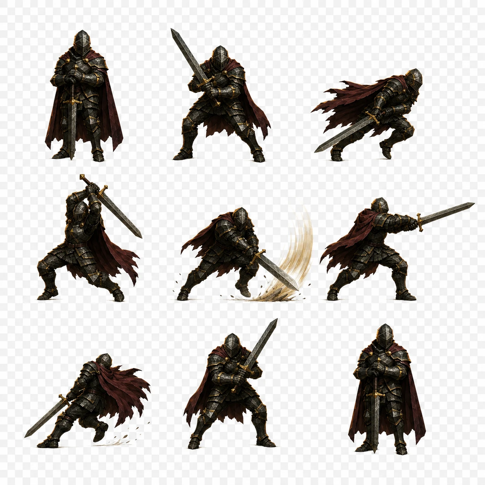
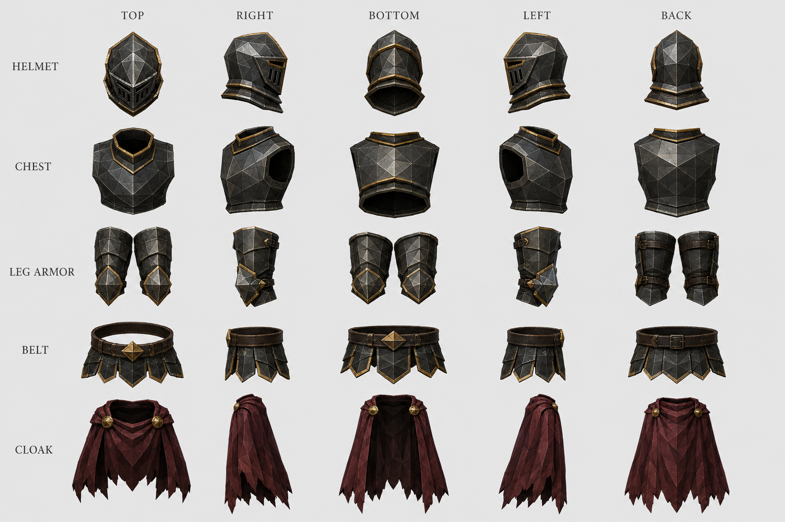
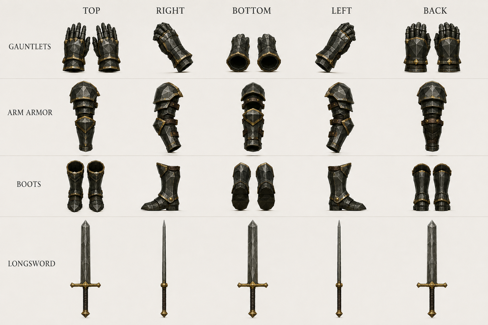
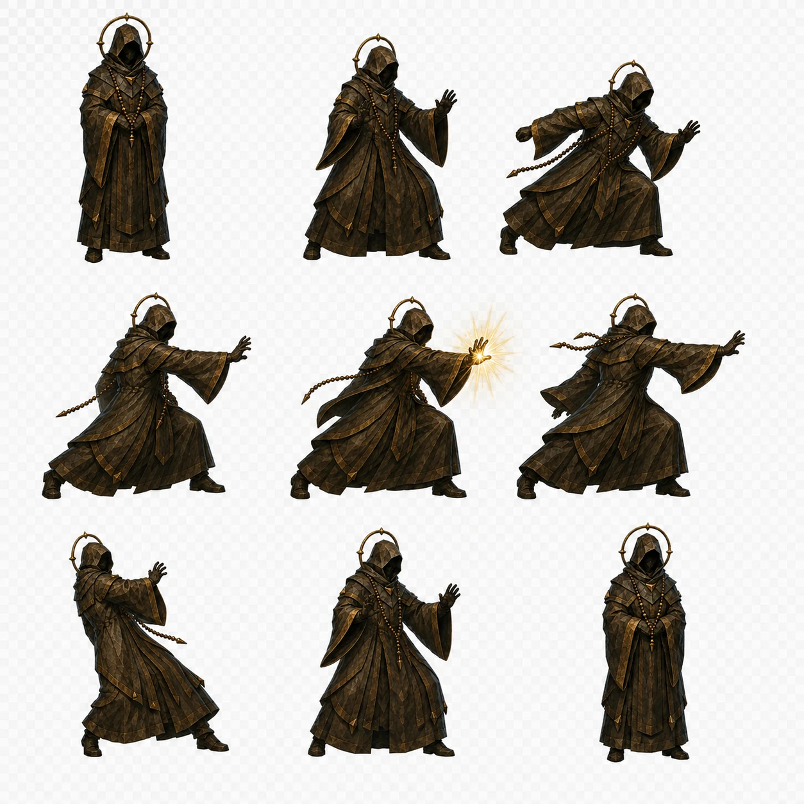
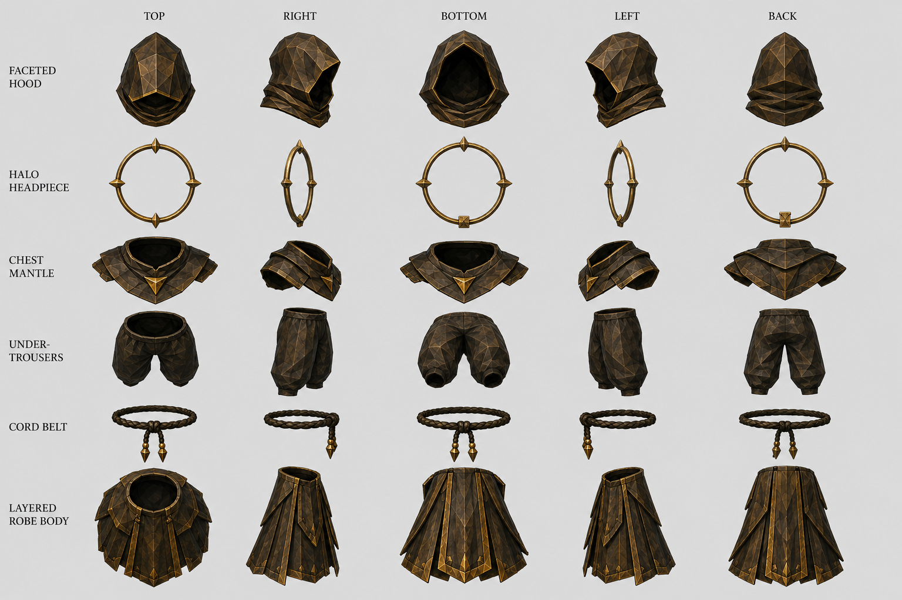
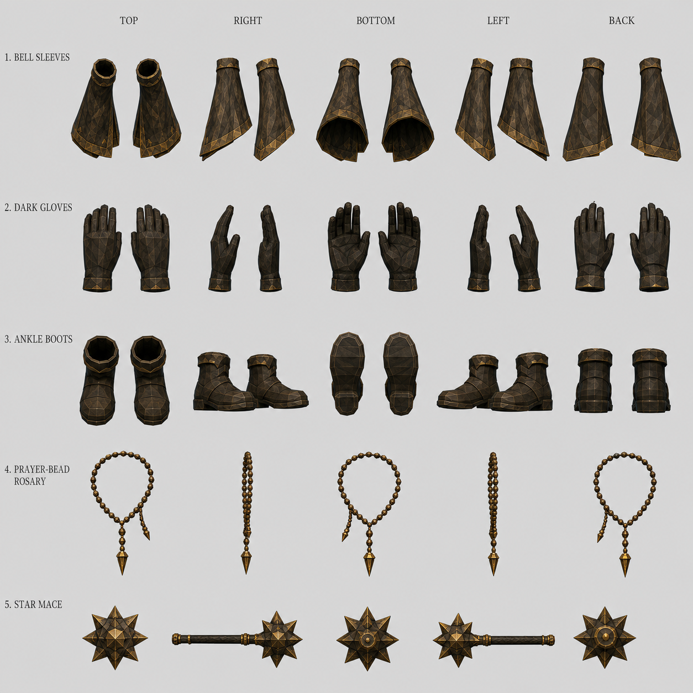
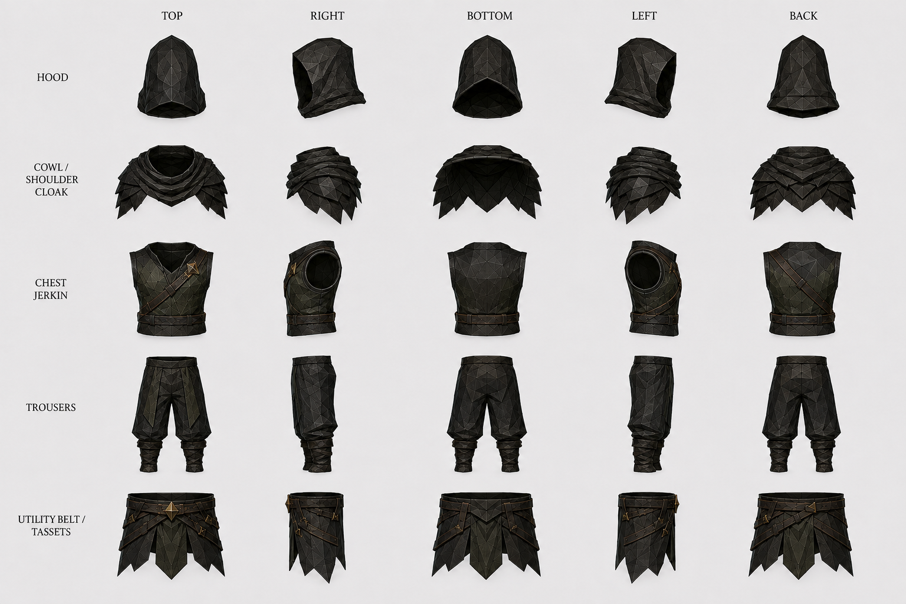
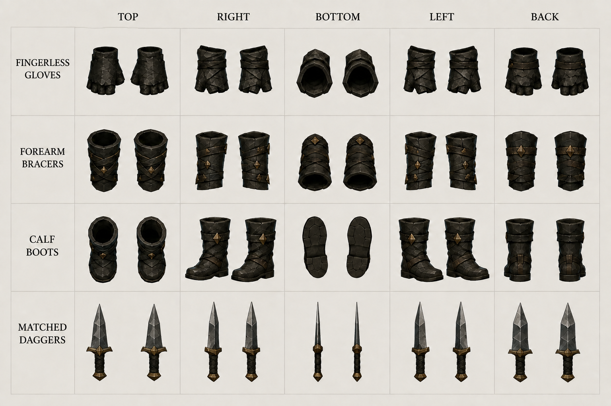
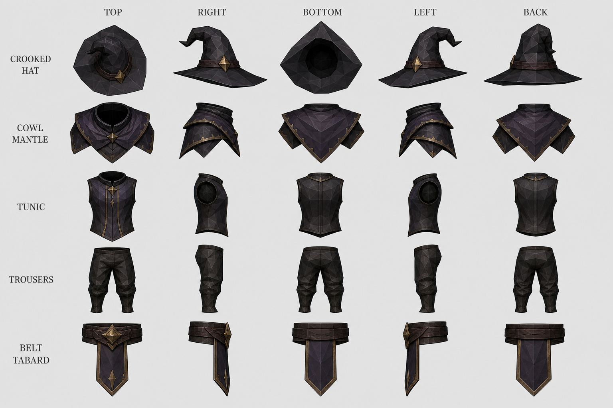
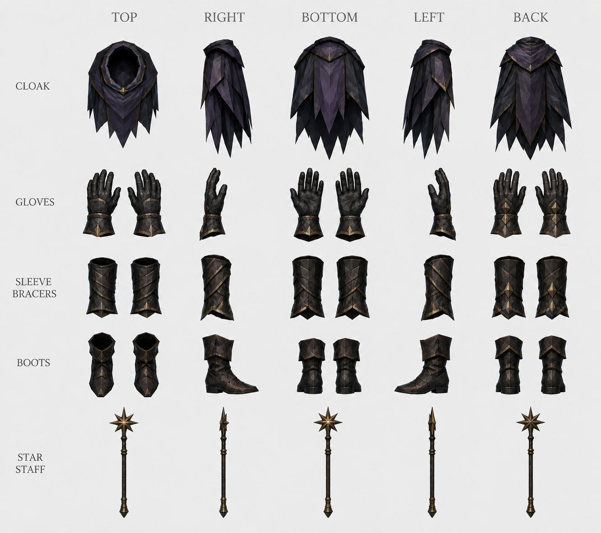

Low-Poly Fighters — Painted Poses
Painted reference sheets for the four AshenSpire classes. Per class: the painted poses — nine figures on a 3×3 grid, the sheet every combat sprite in art/poses/ is cut from — and two orthographic equipment sheets, every piece in five views: the garments and the kit (hands, feet, weapon). Dark steel and leather with gold trim over a low-poly faceted surface. The in-game per-piece sprites live in assets/equipment/.
Poses: 3×3 grid, read left to right, top to bottom · Equipment views per row: Top · Right · Bottom · Left · Back
Reaver
Full plate. Dark faceted steel, gold-edged plates, oxblood cloak.

stand · guard · attack1 · attack2 · attack3 · cast · hit · idle (braced, fig. 8) · idle2
A fighter stands ready: the braced stance, figure 8, is the combat idle. Figures 4 and 8 are painted facing left and are mirrored when cut.

Helmet · Chest · Leg armor · Belt · Cloak

Gauntlets · Arm armor · Boots · Longsword
Herald
Pilgrim's vestments. Burnished bronze-brown cloth, gilt hems, a halo and a star mace.

idle (fig. 1) · guard · attack1 · attack2 · attack3 · cast · hit · brace · idle2
A caster stands: figure 1 is the combat idle.

Faceted hood · Halo headpiece · Chest mantle · Under-trousers · Cord belt · Layered robe body

Bell sleeves · Dark gloves · Ankle boots · Prayer-bead rosary · Star mace
Rogue
Layered leathers. Near-black hide, strapped and buckled, matched daggers.

stand · guard · attack1 · attack2 · attack3 · cast · hit · idle (braced, fig. 8) · idle2
A fighter stands ready: the braced stance, figure 8, is the combat idle.

Hood · Cowl / shoulder cloak · Chest jerkin · Trousers · Utility belt / tassets

Fingerless gloves · Forearm bracers · Calf boots · Matched daggers
Starseer
Astral vestments. Violet-black cloth, crooked hat, star-tipped staff.

idle (fig. 1) · guard · attack1 · attack2 · attack3 · cast · hit · brace · idle2
A caster stands: figure 1 is the combat idle.

Crooked hat · Cowl mantle · Tunic · Trousers · Belt tabard

Cloak · Gloves · Sleeve bracers · Boots · Star staff